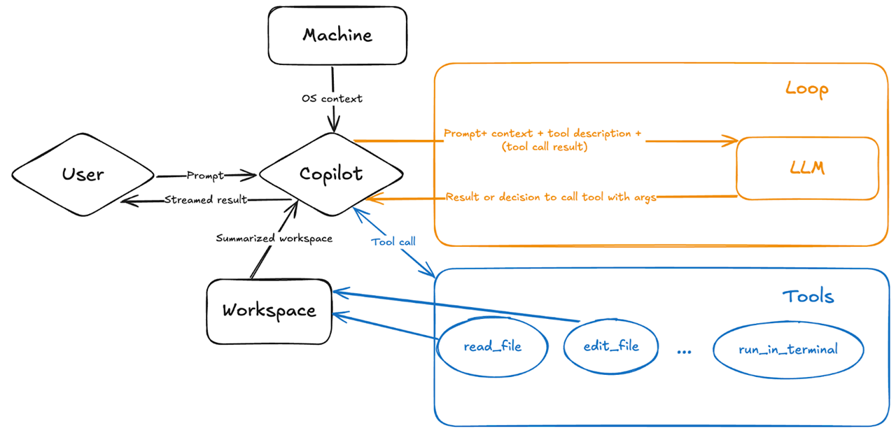

What Is Model Context Protocol?
Model Context Protocol, or MCP, is often described as "USB-C for AI." That comparison works because MCP gives AI tools a standard way to connect to external systems.
Instead of hard-coding one integration at a time, an MCP server exposes its capabilities in a structured format. That includes what tools are available, what each tool does, and what input schema each tool expects. A client such as GitHub Copilot can then inspect that catalog and decide how to use it.
In practical terms, MCP helps Copilot move beyond plain text generation. It lets the model discover tools, understand their parameters, and call them with much less guesswork.
Why MCP Matters in Copilot
When MCP is available, Copilot is not limited to only reading your prompt and replying with prose. It can reason over the tools exposed by the MCP server and decide whether a tool call is useful for the task.
At a high level, Copilot evaluates three things:
- Does this request require a tool at all?
- Which tool best matches the user's intent?
- Which arguments should be passed based on the tool's schema?
Once a tool is selected, Copilot can execute it, inspect the result, and use that output to continue the workflow. That makes the interaction feel much more agentic: the model is no longer just answering, it is operating.
How MCP Tool Calling Works in Agent Mode
In agent mode, the loop is typically straightforward:
That tool-aware loop is the core reason MCP feels powerful. The model is not just generating text about an action. It can actually perform the action when a matching tool exists.

What You Can Do With It
With the right MCP server behind it, Copilot can do far more than edit files in your repository. Depending on the tools that are exposed, you can ask it to:
- Discover similar public repositories for inspiration.
- Search issues using rich context such as titles, descriptions, comments, or reactions.
- Turn promising ideas into GitHub issues before they get lost.
- Retrieve an issue, make changes on a branch, and open a pull request.
- Monitor GitHub Actions workflow runs and analyze build failures.
- Review code security findings and Dependabot alerts across your projects.
That is the real value of MCP: it connects natural-language intent to concrete, structured actions.
Getting Started
The easiest way to try this is through the remote GitHub MCP Server, which is hosted by GitHub and requires no local setup. In VS Code 1.101 or later, open the Copilot Chat panel, toggle Agent mode, and add the server using the one-click install from the GitHub MCP Server repository . Once connected, the tools are immediately available in your agent sessions.
If you prefer a guided walkthrough, the GitHub Skills: Integrate MCP with Copilot exercise takes you through the full flow — from setup to opening a pull request — in under an hour.
A Small Prompting Tip
In VS Code agent mode, type #tools in the chat input to see the
full list of tools available from your connected MCP servers. Selecting a tool
from that list gives Copilot a direct hint about which capability to use.
That does not replace MCP — it simply makes tool discovery more explicit when
you know exactly what you want Copilot to do.
Summary
MCP makes Copilot more useful by helping it act, not just answer.
Copilot reads the tool schema, chooses the right tool, passes the required inputs, and uses the result to continue the task.
A standard way for tools and services to expose their capabilities to AI.